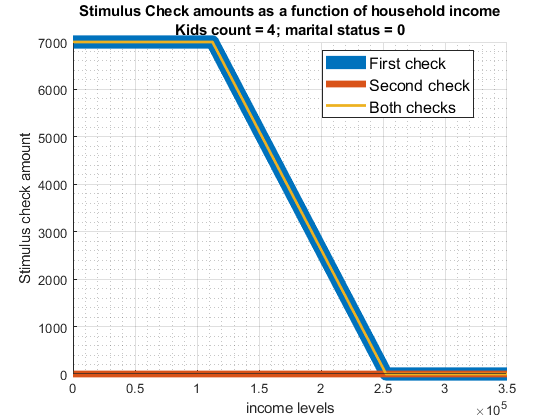
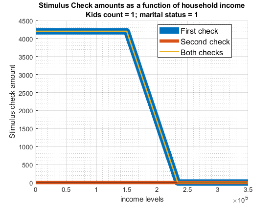

Chapter 11 Taxes
11.1 Compute for Equilibrium Tax
Taking advantage of snw_calibrate_beta_norm_gdp from the PrjOptiSNW Package, this function solves for equilibrium tax rate.
11.1.1 Parameter Controls
clear all;
mp_params = snw_mp_param('default_docdense');
xi=0; % Proportional reduction in income due to unemployment (xi=0 refers to 0 labor income; xi=1 refers to no drop in labor income)
b=1; % Unemployment insurance replacement rate (b=0 refers to no UI benefits; b=1 refers to 100 percent labor income replacement)
mp_params('xi') = xi;
mp_params('b') = b;
mp_controls = snw_mp_control('default_test');Parameters for COVID related Costs:
% Average check per household, given COVID actual policy payment schedule
% And given distribution. The number is from averaging over the actual
% allocations given distribution.
Covid_checks_per_capita = 18.7255856*100/58056;
% Covid_checks_per_capita = 0;
% which tax parameter to change a2 is the deafult, a0 shifts max tax rate
bl_adjust_a0 = false;
bl_load_existing = false;Graph Controls etc:
mp_controls('bl_timer') = true;
mp_controls('bl_print_vfi') = false;
mp_controls('bl_print_vfi_verbose') = false;
mp_controls('bl_print_ds') = false;
mp_controls('bl_print_ds_verbose') = false;
mp_controls('bl_print_find_tax_rate') = true;
mp_controls('bl_print_find_tax_rate_verbose') = true;11.1.2 Solve for New Tax Rate
Solve for Equilibrium Tax rate that clears government costs and income. In the extreme bounding exercise, we assume the government will pay COVID costs all in one year. This is to test whether an extreme tax scenario will lead to changes in allocation results.
Given the checks that the government hands out and the taxes imposed, individual resources post-tax are different in 2020. Households’ savings decisions in 2020 vary with taxes and checks. However, the policy function post 2020 shifts back to thte previous non-COVID world’s policy function because the COVID shock is an one period surprise shock.
a2 = snw_find_tax_rate(mp_params, mp_controls, Covid_checks_per_capita, bl_adjust_a0, bl_load_existing);
Completed SNW_VFI_MAIN_BISEC_VEC;SNW_MP_PARAM=default_docdense;SNW_MP_CONTROL=default_test;time=319.664
Completed SNW_DS_MAIN_VEC;SNW_MP_PARAM=default_docdense;SNW_MP_CONTROL=default_test;time=919.8561
Wage quintile cutoffs=0.4645 0.71528 1.0335 1.5632
Y_inc_agg=64.7962
A_agg=194.5563
Y_inc_agg_per_capita_1=1.415
A_per_capita=4.2486
Gov_cons_per_capita=0.24869
Covid_checks_share_of_GDP=0.022795
SNW_FIND_TAX_RATE: Aggregation, Finished Age Group:1 of 83, time-this-age:0.41178
SNW_FIND_TAX_RATE: Aggregation, Finished Age Group:2 of 83, time-this-age:0.30409
SNW_FIND_TAX_RATE: Aggregation, Finished Age Group:3 of 83, time-this-age:0.30899
SNW_FIND_TAX_RATE: Aggregation, Finished Age Group:4 of 83, time-this-age:0.30567
SNW_FIND_TAX_RATE: Aggregation, Finished Age Group:5 of 83, time-this-age:0.30909
SNW_FIND_TAX_RATE: Aggregation, Finished Age Group:6 of 83, time-this-age:0.30687
SNW_FIND_TAX_RATE: Aggregation, Finished Age Group:7 of 83, time-this-age:0.3075
SNW_FIND_TAX_RATE: Aggregation, Finished Age Group:8 of 83, time-this-age:0.32568
SNW_FIND_TAX_RATE: Aggregation, Finished Age Group:9 of 83, time-this-age:0.30706
SNW_FIND_TAX_RATE: Aggregation, Finished Age Group:10 of 83, time-this-age:0.30656
SNW_FIND_TAX_RATE: Aggregation, Finished Age Group:11 of 83, time-this-age:0.30787
SNW_FIND_TAX_RATE: Aggregation, Finished Age Group:12 of 83, time-this-age:0.30388
SNW_FIND_TAX_RATE: Aggregation, Finished Age Group:13 of 83, time-this-age:0.30705
SNW_FIND_TAX_RATE: Aggregation, Finished Age Group:14 of 83, time-this-age:0.30526
SNW_FIND_TAX_RATE: Aggregation, Finished Age Group:15 of 83, time-this-age:0.30613
SNW_FIND_TAX_RATE: Aggregation, Finished Age Group:16 of 83, time-this-age:0.30936
SNW_FIND_TAX_RATE: Aggregation, Finished Age Group:17 of 83, time-this-age:0.30467
SNW_FIND_TAX_RATE: Aggregation, Finished Age Group:18 of 83, time-this-age:0.30324
SNW_FIND_TAX_RATE: Aggregation, Finished Age Group:19 of 83, time-this-age:0.30123
SNW_FIND_TAX_RATE: Aggregation, Finished Age Group:20 of 83, time-this-age:0.30061
SNW_FIND_TAX_RATE: Aggregation, Finished Age Group:21 of 83, time-this-age:0.30007
SNW_FIND_TAX_RATE: Aggregation, Finished Age Group:22 of 83, time-this-age:0.30015
SNW_FIND_TAX_RATE: Aggregation, Finished Age Group:23 of 83, time-this-age:0.30413
SNW_FIND_TAX_RATE: Aggregation, Finished Age Group:24 of 83, time-this-age:0.30042
SNW_FIND_TAX_RATE: Aggregation, Finished Age Group:25 of 83, time-this-age:0.3027
SNW_FIND_TAX_RATE: Aggregation, Finished Age Group:26 of 83, time-this-age:0.30356
SNW_FIND_TAX_RATE: Aggregation, Finished Age Group:27 of 83, time-this-age:0.30119
SNW_FIND_TAX_RATE: Aggregation, Finished Age Group:28 of 83, time-this-age:0.30155
SNW_FIND_TAX_RATE: Aggregation, Finished Age Group:29 of 83, time-this-age:0.30464
SNW_FIND_TAX_RATE: Aggregation, Finished Age Group:30 of 83, time-this-age:0.30107
SNW_FIND_TAX_RATE: Aggregation, Finished Age Group:31 of 83, time-this-age:0.30277
SNW_FIND_TAX_RATE: Aggregation, Finished Age Group:32 of 83, time-this-age:0.32498
SNW_FIND_TAX_RATE: Aggregation, Finished Age Group:33 of 83, time-this-age:0.30004
SNW_FIND_TAX_RATE: Aggregation, Finished Age Group:34 of 83, time-this-age:0.29931
SNW_FIND_TAX_RATE: Aggregation, Finished Age Group:35 of 83, time-this-age:0.29904
SNW_FIND_TAX_RATE: Aggregation, Finished Age Group:36 of 83, time-this-age:0.30101
SNW_FIND_TAX_RATE: Aggregation, Finished Age Group:37 of 83, time-this-age:0.30317
SNW_FIND_TAX_RATE: Aggregation, Finished Age Group:38 of 83, time-this-age:0.30457
SNW_FIND_TAX_RATE: Aggregation, Finished Age Group:39 of 83, time-this-age:0.30586
SNW_FIND_TAX_RATE: Aggregation, Finished Age Group:40 of 83, time-this-age:0.30363
SNW_FIND_TAX_RATE: Aggregation, Finished Age Group:41 of 83, time-this-age:0.30335
SNW_FIND_TAX_RATE: Aggregation, Finished Age Group:42 of 83, time-this-age:0.30586
SNW_FIND_TAX_RATE: Aggregation, Finished Age Group:43 of 83, time-this-age:0.30422
SNW_FIND_TAX_RATE: Aggregation, Finished Age Group:44 of 83, time-this-age:0.30746
SNW_FIND_TAX_RATE: Aggregation, Finished Age Group:45 of 83, time-this-age:0.30742
SNW_FIND_TAX_RATE: Aggregation, Finished Age Group:46 of 83, time-this-age:0.30865
SNW_FIND_TAX_RATE: Aggregation, Finished Age Group:47 of 83, time-this-age:0.30668
SNW_FIND_TAX_RATE: Aggregation, Finished Age Group:48 of 83, time-this-age:0.32596
SNW_FIND_TAX_RATE: Aggregation, Finished Age Group:49 of 83, time-this-age:0.31867
SNW_FIND_TAX_RATE: Aggregation, Finished Age Group:50 of 83, time-this-age:0.3201
SNW_FIND_TAX_RATE: Aggregation, Finished Age Group:51 of 83, time-this-age:0.32131
SNW_FIND_TAX_RATE: Aggregation, Finished Age Group:52 of 83, time-this-age:0.31776
SNW_FIND_TAX_RATE: Aggregation, Finished Age Group:53 of 83, time-this-age:0.32034
SNW_FIND_TAX_RATE: Aggregation, Finished Age Group:54 of 83, time-this-age:0.32022
SNW_FIND_TAX_RATE: Aggregation, Finished Age Group:55 of 83, time-this-age:0.31828
SNW_FIND_TAX_RATE: Aggregation, Finished Age Group:56 of 83, time-this-age:0.32025
SNW_FIND_TAX_RATE: Aggregation, Finished Age Group:57 of 83, time-this-age:0.32119
SNW_FIND_TAX_RATE: Aggregation, Finished Age Group:58 of 83, time-this-age:0.34504
SNW_FIND_TAX_RATE: Aggregation, Finished Age Group:59 of 83, time-this-age:0.32159
SNW_FIND_TAX_RATE: Aggregation, Finished Age Group:60 of 83, time-this-age:0.31967
SNW_FIND_TAX_RATE: Aggregation, Finished Age Group:61 of 83, time-this-age:0.3213
SNW_FIND_TAX_RATE: Aggregation, Finished Age Group:62 of 83, time-this-age:0.32097
SNW_FIND_TAX_RATE: Aggregation, Finished Age Group:63 of 83, time-this-age:0.32492
SNW_FIND_TAX_RATE: Aggregation, Finished Age Group:64 of 83, time-this-age:0.32049
SNW_FIND_TAX_RATE: Aggregation, Finished Age Group:65 of 83, time-this-age:0.32574
SNW_FIND_TAX_RATE: Aggregation, Finished Age Group:66 of 83, time-this-age:0.3202
SNW_FIND_TAX_RATE: Aggregation, Finished Age Group:67 of 83, time-this-age:0.32328
SNW_FIND_TAX_RATE: Aggregation, Finished Age Group:68 of 83, time-this-age:0.32231
SNW_FIND_TAX_RATE: Aggregation, Finished Age Group:69 of 83, time-this-age:0.32269
SNW_FIND_TAX_RATE: Aggregation, Finished Age Group:70 of 83, time-this-age:0.34522
SNW_FIND_TAX_RATE: Aggregation, Finished Age Group:71 of 83, time-this-age:0.32456
SNW_FIND_TAX_RATE: Aggregation, Finished Age Group:72 of 83, time-this-age:0.325
SNW_FIND_TAX_RATE: Aggregation, Finished Age Group:73 of 83, time-this-age:0.32367
SNW_FIND_TAX_RATE: Aggregation, Finished Age Group:74 of 83, time-this-age:0.31997
SNW_FIND_TAX_RATE: Aggregation, Finished Age Group:75 of 83, time-this-age:0.32636
SNW_FIND_TAX_RATE: Aggregation, Finished Age Group:76 of 83, time-this-age:0.32233
SNW_FIND_TAX_RATE: Aggregation, Finished Age Group:77 of 83, time-this-age:0.32291
SNW_FIND_TAX_RATE: Aggregation, Finished Age Group:78 of 83, time-this-age:0.32344
SNW_FIND_TAX_RATE: Aggregation, Finished Age Group:79 of 83, time-this-age:0.32237
SNW_FIND_TAX_RATE: Aggregation, Finished Age Group:80 of 83, time-this-age:0.32156
SNW_FIND_TAX_RATE: Aggregation, Finished Age Group:81 of 83, time-this-age:0.32284
SNW_FIND_TAX_RATE: Aggregation, Finished Age Group:82 of 83, time-this-age:0.32193
SNW_FIND_TAX_RATE: Aggregation, Finished Age Group:83 of 83, time-this-age:0.32499
SNW_FIND_TAX_RATE tax a2 or a0 adjustments;a2=1.7855;a0=0.258;err=0.18712
SNW_FIND_TAX_RATE tax a2 or a0 adjustments;a2=2.0367;a0=0.258;err=0.16097
SNW_FIND_TAX_RATE tax a2 or a0 adjustments;a2=2.2819;a0=0.258;err=0.14064
SNW_FIND_TAX_RATE tax a2 or a0 adjustments;a2=2.5211;a0=0.258;err=0.12443
SNW_FIND_TAX_RATE tax a2 or a0 adjustments;a2=2.7542;a0=0.258;err=0.11122
SNW_FIND_TAX_RATE tax a2 or a0 adjustments;a2=2.9813;a0=0.258;err=0.10028
SNW_FIND_TAX_RATE tax a2 or a0 adjustments;a2=3.2027;a0=0.258;err=0.091075
SNW_FIND_TAX_RATE tax a2 or a0 adjustments;a2=3.4184;a0=0.258;err=0.083235
SNW_FIND_TAX_RATE tax a2 or a0 adjustments;a2=3.6286;a0=0.258;err=0.076483
SNW_FIND_TAX_RATE tax a2 or a0 adjustments;a2=3.8334;a0=0.258;err=0.070612
SNW_FIND_TAX_RATE tax a2 or a0 adjustments;a2=4.0331;a0=0.258;err=0.065464
SNW_FIND_TAX_RATE tax a2 or a0 adjustments;a2=4.2278;a0=0.258;err=0.060916
SNW_FIND_TAX_RATE tax a2 or a0 adjustments;a2=4.4176;a0=0.258;err=0.056872
SNW_FIND_TAX_RATE tax a2 or a0 adjustments;a2=4.6026;a0=0.258;err=0.053254
SNW_FIND_TAX_RATE tax a2 or a0 adjustments;a2=4.7832;a0=0.258;err=0.05
SNW_FIND_TAX_RATE tax a2 or a0 adjustments;a2=4.9592;a0=0.258;err=0.047058
SNW_FIND_TAX_RATE tax a2 or a0 adjustments;a2=5.131;a0=0.258;err=0.044388
SNW_FIND_TAX_RATE tax a2 or a0 adjustments;a2=5.2986;a0=0.258;err=0.041953
SNW_FIND_TAX_RATE tax a2 or a0 adjustments;a2=5.4622;a0=0.258;err=0.039726
SNW_FIND_TAX_RATE tax a2 or a0 adjustments;a2=5.6218;a0=0.258;err=0.037681
SNW_FIND_TAX_RATE tax a2 or a0 adjustments;a2=5.7777;a0=0.258;err=0.035798
SNW_FIND_TAX_RATE tax a2 or a0 adjustments;a2=5.9298;a0=0.258;err=0.034058
SNW_FIND_TAX_RATE tax a2 or a0 adjustments;a2=6.0783;a0=0.258;err=0.032447
SNW_FIND_TAX_RATE tax a2 or a0 adjustments;a2=6.2233;a0=0.258;err=0.030951
SNW_FIND_TAX_RATE tax a2 or a0 adjustments;a2=6.365;a0=0.258;err=0.029558
SNW_FIND_TAX_RATE tax a2 or a0 adjustments;a2=6.5033;a0=0.258;err=0.028259
SNW_FIND_TAX_RATE tax a2 or a0 adjustments;a2=6.6384;a0=0.258;err=0.027045
SNW_FIND_TAX_RATE tax a2 or a0 adjustments;a2=6.7704;a0=0.258;err=0.025908
SNW_FIND_TAX_RATE tax a2 or a0 adjustments;a2=6.8993;a0=0.258;err=0.024841
SNW_FIND_TAX_RATE tax a2 or a0 adjustments;a2=7.0253;a0=0.258;err=0.023838
SNW_FIND_TAX_RATE tax a2 or a0 adjustments;a2=7.1484;a0=0.258;err=0.022894
SNW_FIND_TAX_RATE tax a2 or a0 adjustments;a2=7.2687;a0=0.258;err=0.022004
SNW_FIND_TAX_RATE tax a2 or a0 adjustments;a2=7.3862;a0=0.258;err=0.021164
SNW_FIND_TAX_RATE tax a2 or a0 adjustments;a2=7.5011;a0=0.258;err=0.02037
SNW_FIND_TAX_RATE tax a2 or a0 adjustments;a2=7.6134;a0=0.258;err=0.019618
SNW_FIND_TAX_RATE tax a2 or a0 adjustments;a2=7.7232;a0=0.258;err=0.018905
SNW_FIND_TAX_RATE tax a2 or a0 adjustments;a2=7.8305;a0=0.258;err=0.018229
SNW_FIND_TAX_RATE tax a2 or a0 adjustments;a2=7.9354;a0=0.258;err=0.017586
SNW_FIND_TAX_RATE tax a2 or a0 adjustments;a2=8.0379;a0=0.258;err=0.016976
SNW_FIND_TAX_RATE tax a2 or a0 adjustments;a2=8.1382;a0=0.258;err=0.016394
SNW_FIND_TAX_RATE tax a2 or a0 adjustments;a2=8.2363;a0=0.258;err=0.01584
SNW_FIND_TAX_RATE tax a2 or a0 adjustments;a2=8.3321;a0=0.258;err=0.015312
SNW_FIND_TAX_RATE tax a2 or a0 adjustments;a2=8.4259;a0=0.258;err=0.014807
SNW_FIND_TAX_RATE tax a2 or a0 adjustments;a2=8.5175;a0=0.258;err=0.014325
SNW_FIND_TAX_RATE tax a2 or a0 adjustments;a2=8.6072;a0=0.258;err=0.013865
SNW_FIND_TAX_RATE tax a2 or a0 adjustments;a2=8.6949;a0=0.258;err=0.013424
SNW_FIND_TAX_RATE tax a2 or a0 adjustments;a2=8.7807;a0=0.258;err=0.013002
SNW_FIND_TAX_RATE tax a2 or a0 adjustments;a2=8.8645;a0=0.258;err=0.012598
SNW_FIND_TAX_RATE tax a2 or a0 adjustments;a2=8.9466;a0=0.258;err=0.01221
SNW_FIND_TAX_RATE tax a2 or a0 adjustments;a2=9.0269;a0=0.258;err=0.011838
SNW_FIND_TAX_RATE tax a2 or a0 adjustments;a2=9.1054;a0=0.258;err=0.011481
SNW_FIND_TAX_RATE tax a2 or a0 adjustments;a2=9.1822;a0=0.258;err=0.011138
SNW_FIND_TAX_RATE tax a2 or a0 adjustments;a2=9.2573;a0=0.258;err=0.010808
SNW_FIND_TAX_RATE tax a2 or a0 adjustments;a2=9.3309;a0=0.258;err=0.010491
SNW_FIND_TAX_RATE tax a2 or a0 adjustments;a2=9.4028;a0=0.258;err=0.010186
SNW_FIND_TAX_RATE tax a2 or a0 adjustments;a2=9.4732;a0=0.258;err=0.0098926
SNW_FIND_TAX_RATE tax a2 or a0 adjustments;a2=9.542;a0=0.258;err=0.0096097
SNW_FIND_TAX_RATE tax a2 or a0 adjustments;a2=9.6094;a0=0.258;err=0.0093372
SNW_FIND_TAX_RATE tax a2 or a0 adjustments;a2=9.6753;a0=0.258;err=0.0090744
SNW_FIND_TAX_RATE tax a2 or a0 adjustments;a2=9.7398;a0=0.258;err=0.008821
SNW_FIND_TAX_RATE tax a2 or a0 adjustments;a2=9.8029;a0=0.258;err=0.0085765
SNW_FIND_TAX_RATE tax a2 or a0 adjustments;a2=9.8647;a0=0.258;err=0.0083404
SNW_FIND_TAX_RATE tax a2 or a0 adjustments;a2=9.9252;a0=0.258;err=0.0081125
SNW_FIND_TAX_RATE tax a2 or a0 adjustments;a2=9.9843;a0=0.258;err=0.0078923
SNW_FIND_TAX_RATE tax a2 or a0 adjustments;a2=10.0422;a0=0.258;err=0.0076795
SNW_FIND_TAX_RATE tax a2 or a0 adjustments;a2=10.0989;a0=0.258;err=0.0074738
SNW_FIND_TAX_RATE tax a2 or a0 adjustments;a2=10.1543;a0=0.258;err=0.0072748
SNW_FIND_TAX_RATE tax a2 or a0 adjustments;a2=10.2086;a0=0.258;err=0.0070823
SNW_FIND_TAX_RATE tax a2 or a0 adjustments;a2=10.2617;a0=0.258;err=0.0068961
SNW_FIND_TAX_RATE tax a2 or a0 adjustments;a2=10.3137;a0=0.258;err=0.0067158
SNW_FIND_TAX_RATE tax a2 or a0 adjustments;a2=10.3646;a0=0.258;err=0.0065412
SNW_FIND_TAX_RATE tax a2 or a0 adjustments;a2=10.4144;a0=0.258;err=0.006372
SNW_FIND_TAX_RATE tax a2 or a0 adjustments;a2=10.4632;a0=0.258;err=0.0062082
SNW_FIND_TAX_RATE tax a2 or a0 adjustments;a2=10.5109;a0=0.258;err=0.0060494
SNW_FIND_TAX_RATE tax a2 or a0 adjustments;a2=10.5576;a0=0.258;err=0.0058954
SNW_FIND_TAX_RATE tax a2 or a0 adjustments;a2=10.6033;a0=0.258;err=0.0057461
SNW_FIND_TAX_RATE tax a2 or a0 adjustments;a2=10.6481;a0=0.258;err=0.0056013
SNW_FIND_TAX_RATE tax a2 or a0 adjustments;a2=10.6919;a0=0.258;err=0.0054608
SNW_FIND_TAX_RATE tax a2 or a0 adjustments;a2=10.7348;a0=0.258;err=0.0053245
SNW_FIND_TAX_RATE tax a2 or a0 adjustments;a2=10.7768;a0=0.258;err=0.0051922
SNW_FIND_TAX_RATE tax a2 or a0 adjustments;a2=10.8179;a0=0.258;err=0.0050637
SNW_FIND_TAX_RATE tax a2 or a0 adjustments;a2=10.8582;a0=0.258;err=0.0049389
SNW_FIND_TAX_RATE tax a2 or a0 adjustments;a2=10.8976;a0=0.258;err=0.0048178
SNW_FIND_TAX_RATE tax a2 or a0 adjustments;a2=10.9361;a0=0.258;err=0.0047001
SNW_FIND_TAX_RATE tax a2 or a0 adjustments;a2=10.9739;a0=0.258;err=0.0045857
SNW_FIND_TAX_RATE tax a2 or a0 adjustments;a2=11.0109;a0=0.258;err=0.0044745
SNW_FIND_TAX_RATE tax a2 or a0 adjustments;a2=11.0471;a0=0.258;err=0.0043665
SNW_FIND_TAX_RATE tax a2 or a0 adjustments;a2=11.0825;a0=0.258;err=0.0042614
SNW_FIND_TAX_RATE tax a2 or a0 adjustments;a2=11.1172;a0=0.258;err=0.0041593
SNW_FIND_TAX_RATE tax a2 or a0 adjustments;a2=11.1512;a0=0.258;err=0.0040599
SNW_FIND_TAX_RATE tax a2 or a0 adjustments;a2=11.1844;a0=0.258;err=0.0039633
SNW_FIND_TAX_RATE tax a2 or a0 adjustments;a2=11.217;a0=0.258;err=0.0038692
SNW_FIND_TAX_RATE tax a2 or a0 adjustments;a2=11.2489;a0=0.258;err=0.0037777
SNW_FIND_TAX_RATE tax a2 or a0 adjustments;a2=11.2801;a0=0.258;err=0.0036887
SNW_FIND_TAX_RATE tax a2 or a0 adjustments;a2=11.3107;a0=0.258;err=0.003602
SNW_FIND_TAX_RATE tax a2 or a0 adjustments;a2=11.3406;a0=0.258;err=0.0035177
SNW_FIND_TAX_RATE tax a2 or a0 adjustments;a2=11.3699;a0=0.258;err=0.0034355
SNW_FIND_TAX_RATE tax a2 or a0 adjustments;a2=11.3986;a0=0.258;err=0.0033555
SNW_FIND_TAX_RATE tax a2 or a0 adjustments;a2=11.4267;a0=0.258;err=0.0032776
SNW_FIND_TAX_RATE tax a2 or a0 adjustments;a2=11.4542;a0=0.258;err=0.0032017
SNW_FIND_TAX_RATE tax a2 or a0 adjustments;a2=11.4812;a0=0.258;err=0.0031278
SNW_FIND_TAX_RATE tax a2 or a0 adjustments;a2=11.5076;a0=0.258;err=0.0030558
SNW_FIND_TAX_RATE tax a2 or a0 adjustments;a2=11.5334;a0=0.258;err=0.0029856
SNW_FIND_TAX_RATE tax a2 or a0 adjustments;a2=11.5587;a0=0.258;err=0.0029172
SNW_FIND_TAX_RATE tax a2 or a0 adjustments;a2=11.5835;a0=0.258;err=0.0028505
SNW_FIND_TAX_RATE tax a2 or a0 adjustments;a2=11.6077;a0=0.258;err=0.0027855
SNW_FIND_TAX_RATE tax a2 or a0 adjustments;a2=11.6315;a0=0.258;err=0.0027222
SNW_FIND_TAX_RATE tax a2 or a0 adjustments;a2=11.6548;a0=0.258;err=0.0026604
SNW_FIND_TAX_RATE tax a2 or a0 adjustments;a2=11.6775;a0=0.258;err=0.0026002
SNW_FIND_TAX_RATE tax a2 or a0 adjustments;a2=11.6998;a0=0.258;err=0.0025415
SNW_FIND_TAX_RATE tax a2 or a0 adjustments;a2=11.7217;a0=0.258;err=0.0024842
SNW_FIND_TAX_RATE tax a2 or a0 adjustments;a2=11.7431;a0=0.258;err=0.0024283
SNW_FIND_TAX_RATE tax a2 or a0 adjustments;a2=11.764;a0=0.258;err=0.0023738
SNW_FIND_TAX_RATE tax a2 or a0 adjustments;a2=11.7846;a0=0.258;err=0.0023207
SNW_FIND_TAX_RATE tax a2 or a0 adjustments;a2=11.8046;a0=0.258;err=0.0022688
SNW_FIND_TAX_RATE tax a2 or a0 adjustments;a2=11.8243;a0=0.258;err=0.0022182
SNW_FIND_TAX_RATE tax a2 or a0 adjustments;a2=11.8436;a0=0.258;err=0.0021688
SNW_FIND_TAX_RATE tax a2 or a0 adjustments;a2=11.8625;a0=0.258;err=0.0021206
SNW_FIND_TAX_RATE tax a2 or a0 adjustments;a2=11.8809;a0=0.258;err=0.0020735
SNW_FIND_TAX_RATE tax a2 or a0 adjustments;a2=11.899;a0=0.258;err=0.0020276
SNW_FIND_TAX_RATE tax a2 or a0 adjustments;a2=11.9168;a0=0.258;err=0.0019828
SNW_FIND_TAX_RATE tax a2 or a0 adjustments;a2=11.9341;a0=0.258;err=0.001939
SNW_FIND_TAX_RATE tax a2 or a0 adjustments;a2=11.9511;a0=0.258;err=0.0018963
SNW_FIND_TAX_RATE tax a2 or a0 adjustments;a2=11.9678;a0=0.258;err=0.0018546
SNW_FIND_TAX_RATE tax a2 or a0 adjustments;a2=11.9841;a0=0.258;err=0.0018138
SNW_FIND_TAX_RATE tax a2 or a0 adjustments;a2=12.0001;a0=0.258;err=0.0017741
SNW_FIND_TAX_RATE tax a2 or a0 adjustments;a2=12.0157;a0=0.258;err=0.0017352
SNW_FIND_TAX_RATE tax a2 or a0 adjustments;a2=12.031;a0=0.258;err=0.0016973
SNW_FIND_TAX_RATE tax a2 or a0 adjustments;a2=12.046;a0=0.258;err=0.0016602
SNW_FIND_TAX_RATE tax a2 or a0 adjustments;a2=12.0607;a0=0.258;err=0.001624
SNW_FIND_TAX_RATE tax a2 or a0 adjustments;a2=12.0751;a0=0.258;err=0.0015887
SNW_FIND_TAX_RATE tax a2 or a0 adjustments;a2=12.0892;a0=0.258;err=0.0015542
SNW_FIND_TAX_RATE tax a2 or a0 adjustments;a2=12.103;a0=0.258;err=0.0015204
SNW_FIND_TAX_RATE tax a2 or a0 adjustments;a2=12.1165;a0=0.258;err=0.0014875
SNW_FIND_TAX_RATE tax a2 or a0 adjustments;a2=12.1298;a0=0.258;err=0.0014552
SNW_FIND_TAX_RATE tax a2 or a0 adjustments;a2=12.1427;a0=0.258;err=0.0014238
SNW_FIND_TAX_RATE tax a2 or a0 adjustments;a2=12.1554;a0=0.258;err=0.001393
SNW_FIND_TAX_RATE tax a2 or a0 adjustments;a2=12.1679;a0=0.258;err=0.001363
SNW_FIND_TAX_RATE tax a2 or a0 adjustments;a2=12.1801;a0=0.258;err=0.0013336
SNW_FIND_TAX_RATE tax a2 or a0 adjustments;a2=12.192;a0=0.258;err=0.0013049
SNW_FIND_TAX_RATE tax a2 or a0 adjustments;a2=12.2037;a0=0.258;err=0.0012768
SNW_FIND_TAX_RATE tax a2 or a0 adjustments;a2=12.2151;a0=0.258;err=0.0012494
SNW_FIND_TAX_RATE tax a2 or a0 adjustments;a2=12.2263;a0=0.258;err=0.0012226
SNW_FIND_TAX_RATE tax a2 or a0 adjustments;a2=12.2373;a0=0.258;err=0.0011964
SNW_FIND_TAX_RATE tax a2 or a0 adjustments;a2=12.2481;a0=0.258;err=0.0011708
SNW_FIND_TAX_RATE tax a2 or a0 adjustments;a2=12.2586;a0=0.258;err=0.0011457
SNW_FIND_TAX_RATE tax a2 or a0 adjustments;a2=12.2689;a0=0.258;err=0.0011213
SNW_FIND_TAX_RATE tax a2 or a0 adjustments;a2=12.279;a0=0.258;err=0.0010973
SNW_FIND_TAX_RATE tax a2 or a0 adjustments;a2=12.2889;a0=0.258;err=0.0010739
SNW_FIND_TAX_RATE tax a2 or a0 adjustments;a2=12.2986;a0=0.258;err=0.001051
SNW_FIND_TAX_RATE tax a2 or a0 adjustments;a2=12.3081;a0=0.258;err=0.0010287
SNW_FIND_TAX_RATE tax a2 or a0 adjustments;a2=12.3174;a0=0.258;err=0.0010068
SNW_FIND_TAX_RATE tax a2 or a0 adjustments;a2=12.3265;a0=0.258;err=0.0009854
SNW_FIND_TAX_RATE tax a2 or a0 adjustments;a2=12.3355;a0=0.258;err=0.00096448
SNW_FIND_TAX_RATE tax a2 or a0 adjustments;a2=12.3442;a0=0.258;err=0.00094402
SNW_FIND_TAX_RATE tax a2 or a0 adjustments;a2=12.3528;a0=0.258;err=0.00092401
SNW_FIND_TAX_RATE tax a2 or a0 adjustments;a2=12.3612;a0=0.258;err=0.00090444
SNW_FIND_TAX_RATE tax a2 or a0 adjustments;a2=12.3694;a0=0.258;err=0.0008853
SNW_FIND_TAX_RATE tax a2 or a0 adjustments;a2=12.3774;a0=0.258;err=0.00086657
SNW_FIND_TAX_RATE tax a2 or a0 adjustments;a2=12.3853;a0=0.258;err=0.00084826
SNW_FIND_TAX_RATE tax a2 or a0 adjustments;a2=12.393;a0=0.258;err=0.0008303511.2 Existing Stimulus as a Function of Income and Family Status
Taking advantage of snw_stimulus_checks from the PrjOptiSNW Package, this function presents stimulus checks at different income levels for households with different children count and martial status. The function considers the first as well as the second stimulus check.
11.2.1 Trump Stimulus Checks for Unmarried Households
Check base amount per adult and per child for the first and second rounds.
[fl_stimulus_adult_first, fl_stimulus_child_first] = deal(1200, 500);
[fl_stimulus_adult_second, fl_stimulus_child_second] = deal(600, 600);
bl_visualize = true;Visualize stimulus check amounts.
bl_marital = 0;
for it_kids=0:1:4
snw_stimulus_checks(it_kids, bl_marital, ...
fl_stimulus_adult_first, fl_stimulus_child_first, ...
fl_stimulus_adult_second, fl_stimulus_child_second, ...
bl_visualize);
end


11.2.2 Trump Stimulus Checks for arried Households
Visualize stimulus check amounts.
bl_marital = 1;
for it_kids=0:1:4
snw_stimulus_checks(it_kids, bl_marital, ...
fl_stimulus_adult_first, fl_stimulus_child_first, ...
fl_stimulus_adult_second, fl_stimulus_child_second, ...
bl_visualize);
end


11.2.3 Biden Stimulus Checks for Unmarried and Married Households
Biden check, what is the maximum phase out given 4 kids and married?
(1400*6)/(5/100)+150000
ans = 318000Check levels (no second round).
[fl_stimulus_adult_first, fl_stimulus_child_first] = deal(1400, 1400);
[fl_stimulus_adult_second, fl_stimulus_child_second] = deal(0, 0);
bl_visualize = true;Visualize stimulus check amounts.
for bl_marital=0:1
for it_kids=0:1:4
snw_stimulus_checks(it_kids, bl_marital, ...
fl_stimulus_adult_first, fl_stimulus_child_first, ...
fl_stimulus_adult_second, fl_stimulus_child_second, ...
bl_visualize);
end
end







11.3 Existing Stimulus as a Function of Income and Family Status
Taking advantage of snw_stimulus_checks_biden from the PrjOptiSNW Package, this function presents stimulus checks at different income levels for households with different children count and martial status. The function considers the first as well as the second stimulus check.
11.3.1 Biden Stimulus Checks for Unmarried Households
Check base amount per adult and per child for the first and second rounds.
Visualize stimulus check amounts.
bl_visualize = true;
bl_marital = 0;
for it_kids=0:1:4
snw_stimulus_checks_biden(it_kids, bl_marital, bl_visualize);
end


11.3.2 Biden Stimulus Checks for Married Households
Visualize stimulus check amounts.
bl_marital = 1;
for it_kids=0:1:4
snw_stimulus_checks_biden(it_kids, bl_marital, bl_visualize);
end